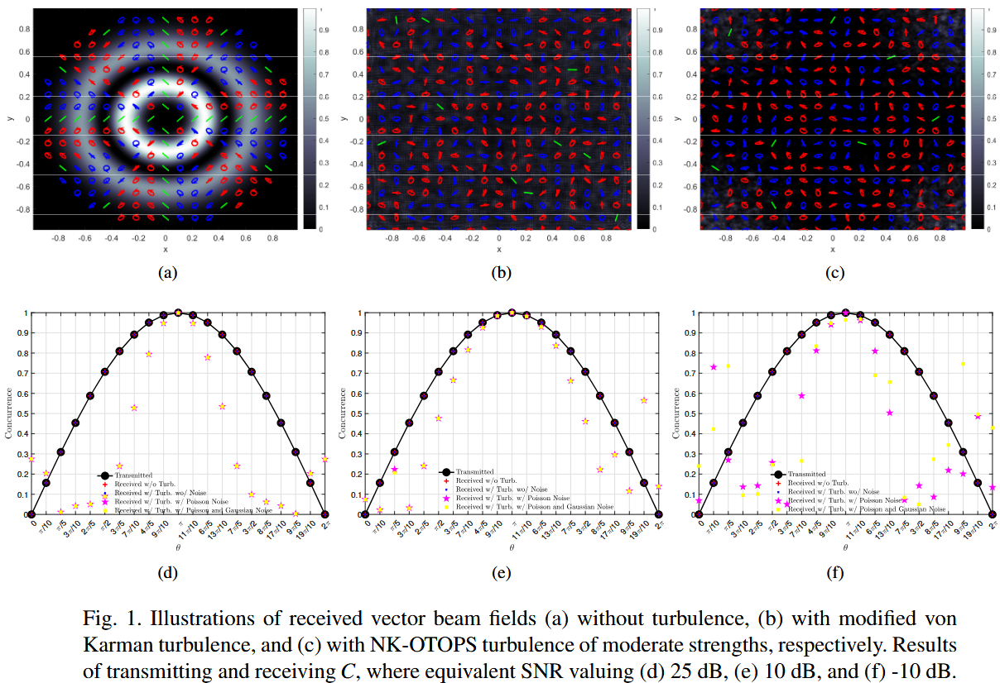

|
I am a PhD student at SIGS-iDI, THU in Shenzhen, where I work on optical turbulence, free-space optics, and optical wireless communications. My advisor is Prof. Yuhan Dong. I completed my ME at SIGS-IOE, THU in Shenzhen, fortunately advised by Prof. Yuhan Dong. Prior to that, I worked on electron physics and devices as a RA for one year, under the fortunate guidance of Prof. Kangcheng Qi and Prof. Xiaoju Wang at UESTC in Chengdu. I completed my BS at SOSE, UESTC in Chengdu. Please feel free to contact me if you are interested in our works. Email | Google Scholar | Bio | Home | Research | News | Misc |
ResearchMy research keywords include:
Below is a selected list of published documents and preprints. Some intriguing papers are highlighted. |

|
Achieving full spatial degrees of freedom: Wavefront reconstruction for continuous aperture MIMO communications
Dai W, Su X, Zhang L, Wei T, Liu Z, Song J, Dong Y submitted to IEEE Trans. Veh. Technol., 2025 Wavefront engineering in holographic MIMO. |
|
Ray-tracing modeling of coherent free-space optical links
Dai W, Hu C, Su X, Wei T, Song J, Dong Y Proc. SPIE: Optical Modeling and Performance Predictions XV, p. 13594-21, 2025 Part of SPIE O+P'25 event. Coherence propagation modeling of Gaussian-Schell Model beams. |
|

|
Optical Skyrmions for wireless communications
Dai W, Su X, Wei T, Zhang L, Song J, Dong Y Proc. SPIE: Polarization Science and Remote Sensing XII, p. 13615-24, 2025 Part of SPIE O+P'25 event. Numerical demonstration of optical topology for communication. |

|
Optical turbulence tomography via optimal transport
Dai W, Su X, Wei T, Zhang L, Song J, Dong Y Proc. SPIE: Laser Communication and Propagation through the Atmosphere and Oceans XIV, p. 13617-40, 2025 Part of SPIE O+P'25 event. 3D turbulence modeling. |
|
Free-space optical communication based on augmentation of OAM modes /OAM模式增广的自由空间光通信 (in Chinese)
Dai W, Su X, Liu X, Zhang L, Wei T, Song J, Dong Y Study on Optical Communications (光通信研究), vol.xx, no.xx, pp.xx-xx, 2025 Passive manipulation of asymmetric OAM spectra. |
|

|
OAM spectral asymmetry identification and symbol-level detection in twisted partially coherent FSO links
Dai W, Liu X, Su X, Guan X, Song J, Dong Y Proceedings of Frontiers in Optics + Laser Science (FiO, LS) , p. JD4A.61, 2024 Optica and The APS Division of Laser Science annual meeting. Passive manipulation of asymmetric OAM spectra. |
|  |
Concurrence modulation and direct detection free-space optical communication systems under general Stokes detection noise
Dai W, Liu X, Su X, Guan X, Song J, Dong Y Proceedings of Frontiers in Optics + Laser Science (FiO, LS), p. JD4A.60, 2024 Optica and The APS Division of Laser Science annual meeting. Concurrence modulation and direct detection. |

|
On arbitrary turbulent fading in OAM based underwater free-space optical links
Dai W, Liu X, Tang S, Zhang L, Tang X, Song J, Dong Y Proceedings of Pacific Rim Conf. Lasers Electro-Optics (CLEO-PR), p. P2.078, 2024 Statistical modeling of OAM irradiance in oceanic turbulence. |
|
Availability of twisted partially coherent beams in underwater free-space optical links
Dai W, Zhang Y, Liu X, Zhang L, Tang X, Song J, Dong Y Proceedings of Pacific Rim Conf. Lasers Electro-Optics (CLEO-PR), p. P2.077, 2024 Passive manipulation of asymmetric OAM spectra. |
|
|
Optimal mode for continuous aperture MIMO based holographic communications
Dai W, Zhang Y, Zhang L, Tang X, Song J, Dong Y Proceedings of IEEE Int. Conf. Commun. Workshops (ICC Workshops), pp. 1938-1943, 2024 2D Slepian functions for holographic communications. |
|

|
Scintillation index of plane and spherical laser beams propagating in arbitrary oceanic turbulence
Dai W, Zhang L, Lin J, Wu K, Wei T, Zhao, Z., Tang X, Song J, Zhang X-P, Dong Y Proceedings of Photonics Electromagn. Res. Symp. (PIERS), pp. 1-10, 2024 Closed-form scintillation in arbitrary oceanic turbulence. |

|
On propagation of OAM modes carried by partially coherent Laguerre-Gaussian beams in weak oceanic turbulence with wide range parameters
Dai W, Liao, Y, Zhang Y, Dong Y Proceedings of Asia Commun. Photonics Conf. (ACP), pp. 1-5, 2023 Closed-form OAM degradation in oceanic turbulence. |
News
|
MiscellaneaServices
Teaching
Honors
|